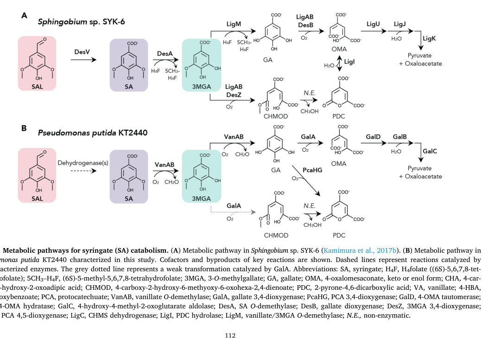

galA encodes gallate dioxygenase, the Fe(II)-dependent ring-cleavage enzyme that initiates the KT2440 gallate degradation pathway by converting gallate to the keto tautomer of 4-oxalomesaconate.
| GO Term | Evidence | Action | Reason |
|---|---|---|---|
|
GO:0008198
ferrous iron binding
|
IEA
GO_REF:0000002 |
KEEP AS NON CORE |
Summary: Ferrous iron binding is correct for GalA but secondary to the catalytic activity.
Reason: GalA uses Fe(2+) as cofactor, but its core molecular function is gallate dioxygenase activity.
Supporting Evidence:
file:PSEPK/galA/galA-uniprot.txt
Name=Fe(2+); Xref=ChEBI:CHEBI:29033
file:PSEPK/galA/galA-goa.tsv
GO:0008198 ferrous iron binding
|
|
GO:0016491
oxidoreductase activity
|
IEA
GO_REF:0000002 |
MARK AS OVER ANNOTATED |
Summary: Oxidoreductase activity is true but overly generic for GalA.
Reason: The exact gallate dioxygenase term should be used instead of this broad oxidoreductase parent.
Supporting Evidence:
file:PSEPK/galA/galA-uniprot.txt
Ring-cleavage dioxygenase that acts specifically on gallate
file:PSEPK/galA/galA-goa.tsv
GO:0016491 oxidoreductase activity
|
|
GO:0016702
oxidoreductase activity, acting on single donors with incorporation of molecular oxygen, incorporation of two atoms of oxygen
|
IEA
GO_REF:0000117 |
KEEP AS NON CORE |
Summary: This dioxygenase parent is directionally correct but less informative than gallate dioxygenase activity.
Reason: Retain as a broad parent while treating GO:0036238 as the core molecular-function annotation.
Supporting Evidence:
file:PSEPK/galA/galA-uniprot.txt
Ring-cleavage dioxygenase that acts specifically on gallate
file:PSEPK/galA/galA-goa.tsv
GO:0016702 oxidoreductase activity
|
|
GO:0036238
gallate dioxygenase activity
|
IEA
GO_REF:0000120 |
ACCEPT |
Summary: The automated EC/Rhea-derived gallate dioxygenase annotation matches the characterized GalA activity.
Reason: UniProt and experimental annotations identify GalA as gallate dioxygenase, EC 1.13.11.57.
Supporting Evidence:
file:PSEPK/galA/galA-uniprot.txt
Ring-cleavage dioxygenase that acts specifically on gallate
file:PSEPK/galA/galA-uniprot.txt
EC=1.13.11.57
file:PSEPK/galA/galA-goa.tsv
GO:0036238 gallate dioxygenase activity
|
|
GO:0008198
ferrous iron binding
|
IDA
PMID:16030014 Molecular characterization of the gallate dioxygenase from P... |
KEEP AS NON CORE |
Summary: Ferrous iron binding is experimentally supported for GalA but is not the core function.
Reason: The GalA paper reports Fe(2+) as the cofactor; the catalytic dioxygenase activity remains the core molecular function.
Supporting Evidence:
PMID:16030014
uses Fe2+ as the main cofactor
file:PSEPK/galA/galA-uniprot.txt
Name=Fe(2+); Xref=ChEBI:CHEBI:29033
file:PSEPK/galA/galA-deep-research-falcon.md
Iron occupancy after reconstitution**: ~**0.5 Fe2+ per protomer**, consistent with a non-heme Fe2+-dependent extradiol dioxygenase
|
|
GO:0019396
gallate catabolic process
|
IDA
PMID:21219457 Unravelling the gallic acid degradation pathway in bacteria:... |
ACCEPT |
Summary: Gallate catabolic process is the correct pathway annotation for GalA.
Reason: GalA catalyzes the first step of the characterized KT2440 gallate degradation pathway.
Supporting Evidence:
file:PSEPK/galA/galA-uniprot.txt
Mediates the first
PMID:21219457
cluster (gal genes) responsible for growth in GA
file:PSEPK/galA/galA-goa.tsv
GO:0019396 gallate catabolic process
file:PSEPK/galA/galA-deep-research-falcon.md
part of the **gallic acid (gallate) catabolic pathway (Gal pathway)** that funnels carbon to **pyruvate and oxaloacetate** via GalD/GalB/GalC
|
|
GO:0036238
gallate dioxygenase activity
|
IDA
PMID:16030014 Molecular characterization of the gallate dioxygenase from P... |
ACCEPT |
Summary: Gallate dioxygenase activity is the specific experimentally supported molecular function of GalA.
Reason: The GalA biochemical paper characterized gallate-specific ring-cleavage dioxygenase activity.
Supporting Evidence:
PMID:16030014
ring-cleavage dioxygenase that acts specifically on gallate to produce
file:PSEPK/galA/galA-uniprot.txt
Reaction=3,4,5-trihydroxybenzoate + O2
file:PSEPK/galA/galA-deep-research-falcon.md
The best-supported physiological substrate is **gallate (gallic acid; 3,4,5-trihydroxybenzoate)**
|
|
GO:0036238
gallate dioxygenase activity
|
IDA
PMID:21219457 Unravelling the gallic acid degradation pathway in bacteria:... |
ACCEPT |
Summary: Gallate dioxygenase activity is also supported by the gal-cluster pathway characterization.
Reason: The gal-cluster paper places GalA as the dioxygenase that generates OMAketo for the downstream GalD step.
Supporting Evidence:
file:PSEPK/galA/galA-uniprot.txt
Ring-cleavage dioxygenase that acts specifically on gallate
PMID:21219457
OMAketo generated by the GalA dioxygenase
file:PSEPK/galA/galA-deep-research-falcon.md
GalA is the native **gallate-cleaving extradiol dioxygenase** in KT2440
|
Q: What residues define the GalA-specific subgroup of type II extradiol dioxygenases and its gallate specificity?
Experiment: Mutate predicted Fe(II)-binding and substrate-pocket residues and measure gallate dioxygenase kinetics and substrate range.
Type: enzyme structure-function assay
The research report should be a detailed narrative explaining the function, biological processes, and localization of the gene product. Citations should be given for all claims.
You should prioritize authoritative reviews and primary scientific literature when conducting research. You can supplement
this with annotations you find in gene/protein databases, but these can be outdated or inaccurate.
We are specifically interested in the primary function of the gene - for enzymes, what reaction is catalyzed, and what is the substrate specificity? For transporters, what is the substrate? For structural proteins or adapters, what is the broader structural role? For signaling molecules, what is the role in the pathway.
We are interested in where in or outside the cell the gene product carries out its function.
We are also interested in the signaling or biochemical pathways in which the gene functions. We are less interested in broad pleiotropic effects, except where these elucidate the precise role.
Include evidence where possible. We are interested in both experimental evidence as well as inference from structure, evolution, or bioinformatic analysis. Precise studies should be prioritized over high-throughput, where available.
The literature retrieved here consistently maps GalA to Pseudomonas putida strain KT2440 locus PP_2518 and describes it as a gallate (gallic acid) ring-cleaving dioxygenase in the gallic-acid utilization pathway. In particular, (i) a 2023 metabolic engineering study explicitly places GalA in the galTAP operon and calls it the “gallic acid dioxygenase” responsible for the first step of gallic acid degradation, (ii) a 2025 lignin-upgrading study explicitly identifies GalA from P. putida KT2440 as a gallate dioxygenase from PP_2518, and (iii) a pathway figure in a highly cited 2021 study depicts GalA (gallate 3,4-dioxygenase) converting gallate to 4-oxalomesaconate (OMA) in KT2440. These statements align with the UniProt description provided (Q88JX5; galA; PP_2518; gallate dioxygenase). (dias2023fromdegraderto pages 4-6, tuomela2025conversionandupgrading pages 4-7, notonier2021metabolismofsyringyl media 3fdc80ac)
A convergent depiction across studies is that GalA catalyzes the ring-opening step of gallate/gallic acid catabolism, generating 4-oxalomesaconate (OMA), which is further processed by GalD/GalB/GalC to yield pyruvate and oxaloacetate that enter central metabolism (TCA cycle). (notonier2021metabolismofsyringyl pages 2-3, notonier2021metabolismofsyringyl media 3fdc80ac, ookawa2025catabolicsystemof pages 1-2)
Pathway-level evidence (including a curated pathway figure) supports that in P. putida KT2440:
- Gallate (GA) → 4-oxalomesaconate (OMA) catalyzed by GalA (gallate 3,4-dioxygenase). (notonier2021metabolismofsyringyl media 3fdc80ac)
Downstream reactions (not catalyzed by GalA, but essential for functional annotation of the pathway context) include:
- OMA → processed via GalD (OMA tautomerase), GalB (hydratase; sometimes described as KCH hydratase/OMA hydratase depending on nomenclature), and GalC (aldolase acting on downstream ring-opened intermediates), yielding pyruvate and oxaloacetate. (ookawa2025catabolicsystemof pages 1-2, notonier2021metabolismofsyringyl pages 2-3, notonier2021metabolismofsyringyl media 3fdc80ac)
The best-supported physiological substrate is gallate (gallic acid; 3,4,5-trihydroxybenzoate); in vitro steady-state kinetics and in vivo pathway roles are reported for gallate cleavage. (dumalo2020dioxygenasesinthe pages 66-71, notonier2021metabolismofsyringyl media 3fdc80ac)
GalA shows only very weak/inefficient activity on 3-O-methylgallate (3-MGA) in vitro (too slow to measure steady-state parameters), but LC-Q-TOF-MS detected GalA-dependent formation of ring-opened products consistent with formation of CHMOD and PDC (2-pyrone-4,6-dicarboxylate). (dumalo2020dioxygenasesinthe pages 66-71)
A detailed biochemical characterization of KT2440 GalA reported:
- Apparent kinetic parameters for gallate cleavage: kcat ≈ 52 s−1, Km ≈ 59 μM, and kcat/Km ≈ 9 × 10^5 s−1·M−1. (dumalo2020dioxygenasesinthe pages 66-71)
- Iron occupancy after reconstitution: ~0.5 Fe2+ per protomer, consistent with a non-heme Fe2+-dependent extradiol dioxygenase. (dumalo2020dioxygenasesinthe pages 66-71)
- Turnover-associated oxidative inactivation with partition ratio ≈ 1860, indicating susceptibility to self-inactivation during catalysis (relevant to pathway engineering). (dumalo2020dioxygenasesinthe pages 66-71)
In KT2440, a prominent lignin-relevant route proceeds through:
- Syringate → 3-O-methylgallate (3MGA) → gallate (GA) via VanAB (O-demethylation), then gallate is processed by GalA to OMA. (notonier2021metabolismofsyringyl media 3fdc80ac)
Several sources highlight chemical/enzymatic links between OMA, CHMOD, and PDC (2-pyrone-4,6-dicarboxylate). The KT2440 pathway schematic shows a side route where GalA-mediated transformations can lead to CHMOD, which can non-enzymatically convert to PDC, relevant for lignin-valorization processes targeting PDC as a product. (notonier2021metabolismofsyringyl pages 1-2, notonier2021metabolismofsyringyl media 3fdc80ac)
Multiple sources describe a clustered gene system for gallic acid utilization in KT2440:
- galTAP operon: includes GalA and transport-associated genes; galT encodes an inner-membrane gallic-acid transporter, and galP encodes an outer-membrane porin. GalA is described as the enzyme responsible for the first step of gallic acid degradation. (dias2023fromdegraderto pages 4-6)
- A complementary operon, galBCD, encodes downstream catabolic enzymes (GalB/GalC/GalD). (ookawa2025catabolicsystemof pages 1-2)
A major recent mechanistic advance (2023) is clarification that GalR-regulated induction by extracellular gallic acid is mediated by a metabolic intermediate rather than gallic acid itself:
- GalR (a LysR-family regulator) functions as a transcriptional activator of the gal catabolic genes when gallic acid is supplied. (kutraite2023developmentandapplication pages 2-3)
- Activation of GalR-dependent promoters requires galA activity and the formation of 4-oxalomesaconate (4-OMA); 4-OMA is identified as the effector molecule that interacts with GalR to activate transcription. (kutraite2023developmentandapplication pages 1-2)
This “metabolite-as-inducer” logic is important for functional annotation because it ties GalA’s catalytic output (OMA) directly to transcriptional control, explaining why heterologous hosts require galA for GalR-based sensors to work. (kutraite2023developmentandapplication pages 1-2, kutraite2023developmentandapplication pages 3-4)
None of the retrieved sources explicitly states a subcellular compartment for GalA (e.g., cytosol vs periplasm) or discusses signal peptides. (kutraite2023developmentandapplication pages 1-2, dumalo2020dioxygenasesinthe pages 32-39)
However, the pathway architecture implies that gallic acid is transported into the cell via GalP (outer membrane) and GalT (inner membrane) and then enzymatically converted by cytosolic catabolic enzymes (GalA/GalBCD). This is an inference from transport and pathway descriptions rather than direct localization experiments. (dias2023fromdegraderto pages 4-6, kutraite2023developmentandapplication pages 2-3)
Kutraite & Malys (ACS Synthetic Biology; Feb 2023; https://doi.org/10.1021/acssynbio.2c00537) developed GalR-based whole-cell biosensors and demonstrated:
- galA is required for GalR-system activation in non-native hosts; without GalA, gallic acid does not induce the system. (kutraite2023developmentandapplication pages 1-2, kutraite2023developmentandapplication pages 4-6)
- 4-OMA is the identified GalR effector, linking GalA’s enzymatic product to transcriptional activation. (kutraite2023developmentandapplication pages 1-2, kutraite2023developmentandapplication pages 3-4)
- Quantitative biosensor performance includes limit of detection of 9.7 μM (KT2440-based BS1) and 78 μM (E. coli-based BS2), with tunable response ranges up to ~1.25 mM. (kutraite2023developmentandapplication pages 4-6, kutraite2023developmentandapplication pages 6-7)
Dias et al. (International Microbiology; 2023 online / print issue Nov 2023; https://doi.org/10.1007/s10123-022-00282-5) engineered KT2440 to prevent gallic acid degradation by deleting galTAPR and pcaHG, enabling gallic acid production; they report a final concentration of 346.7 ± 0.004 mg/L gallic acid after 72 h (shaker assays) from a glycerol-based strategy. (dias2023fromdegraderto pages 4-6)
The GalR/galA system was implemented as a whole-cell sensor in P. putida KT2440 and applied to green tea (Camellia sinensis) leaf extracts, quantifying gallic acid and demonstrating that the biosensor could operate at higher dilutions than an HPLC comparison. For example, the reported estimate was 0.148 mM gallic acid in a 160-fold diluted extract (equivalent to 2.71 mg/g dry weight green tea), and the biosensor remained usable up to 1280-fold dilution. (kutraite2023developmentandapplication pages 6-7)
Notonier et al. (Metabolic Engineering; May 2021; https://doi.org/10.1016/j.ymben.2021.02.005) demonstrate lignin-related pathway engineering in KT2440 to produce PDC. A key engineering rationale was that the native KT2440 GalA is potently inactivated by 3-O-methylgallate (3MGA); using alternative enzyme choices (e.g., LigAB) enabled high conversion, including a reported 93% conversion of a lignin monomer mixture to PDC in an engineered strain. (notonier2021metabolismofsyringyl pages 1-2)
KT2440 galA (PP_2518) has been used heterologously: expression of GalA in Acinetobacter baylyi ADP1 enabled conversion of syringate-derived intermediates toward PDC, highlighting GalA as a transferable catalytic module in aromatic upgrading pathways. (tuomela2025conversionandupgrading pages 4-7)
Genetic evidence supports GalA’s central catabolic role:
- Deletion of galA in engineered KT2440 backgrounds is reported to block gallate transformation to central metabolites, consistent with GalA catalyzing the gateway ring-cleavage step; such deletions are used to divert flux toward PDC accumulation rather than complete mineralization. (dumalo2020dioxygenasesinthe pages 32-39)
- Complementation/overexpression experiments show that plasmid-expressed GalA in a KT2440 background can deplete 3MGA and yield detectable PDC in vivo, even though in vitro turnover of 3MGA is extremely slow—illustrating that cellular context (transport, cofactors, competing reactions) can change effective pathway outcomes. (dumalo2020dioxygenasesinthe pages 32-39)
GalA from Pseudomonas putida KT2440 cleaves gallate with apparent kinetic parameters kcat ≈ 52 s^-1, Km ≈ 59 µM, and kcat/Km ≈ 9 × 10^5 s^-1·M^-1; reconstituted enzyme contained about 0.5 Fe^2+ per protomer. (dumalo2020dioxygenasesinthe pages 66-71)
During gallate turnover, GalA shows oxidative inactivation with a reported partition ratio ≈ 1860 and a turnover-dependent inactivation rate noted for 40 nM enzyme with 500 µM gallate of 2.7 ± 0.2 × 10^-2 s^-1. (dumalo2020dioxygenasesinthe pages 66-71)
GalA also transforms 3-O-methylgallate (3-MGA) only very inefficiently; steady-state parameters could not be measured, but LC-Q-TOF-MS detected CHMOD and PDC formation as products. (dumalo2020dioxygenasesinthe pages 66-71, notonier2021metabolismofsyringyl media 3fdc80ac)
In the 2023 GalR/galA whole-cell biosensor work, the GalR system required galA-dependent formation of 4-oxalomesaconate (4-OMA), identified as the activating effector for GalR. (kutraite2023developmentandapplication pages 1-2, kutraite2023developmentandapplication pages 3-4)
The native P. putida-based biosensor (BS1) had a reported limit of detection of 9.7 µM gallic acid and tunable response ranges reported as 0.312–1.25 mM and, in a separate summary, 0.039–1.25 mM; the heterologous E. coli-based biosensor (BS2) had LoD 78 µM and tunable response from 0.078–1.25 mM. (kutraite2023developmentandapplication pages 4-6, kutraite2023developmentandapplication pages 6-7)
Reported Hill-fit parameters for BS1 were Km = 1.459 ± 0.44 mM, Hill = 1.381 ± 0.14 (6 h) and Km = 0.706 ± 0.09 mM, Hill = 1.394 ± 0.07 (12 h); for BS2 they were Km = 0.868 ± 0.19 mM, Hill = 1.817 ± 0.32 (6 h) and Km = 0.525 ± 0.01 mM, Hill = 2.321 ± 0.13 (12 h). (kutraite2023developmentandapplication pages 6-7)
Dynamic range values reported for the biosensors included roughly 112-fold and 2138-fold induction for BS1 and 75-fold and 162-fold for BS2 at different sampling times; promoter constructs in minimal medium also showed up to ~72.3-fold and ~45.6-fold induction depending on architecture. (kutraite2023developmentandapplication pages 2-3, kutraite2023developmentandapplication pages 4-6)
For a real-sample application, BS1 quantified gallic acid in green tea extract: a 160-fold diluted sample was estimated at 0.148 mM, corresponding to 23.71 mM undiluted, 24.2 mg/g dry-weight extract, or 2.71 mg/g dry-weight green tea; the biosensor remained usable at up to 1280-fold dilution, exceeding the dilution range practical for the HPLC comparison. (kutraite2023developmentandapplication pages 6-7)
Blockquote: This blockquote compiles the main quantitative biochemical and biosensor measurements relevant to GalA in Pseudomonas putida KT2440. It is useful as a compact reference for enzyme performance, instability, and recent synthetic-biology applications based on the GalR/galA system.
| Category | Summary |
|---|---|
| Identity | GalA from Pseudomonas putida KT2440 corresponds to UniProt Q88JX5, ordered locus PP_2518, annotated as gallate dioxygenase / gallic acid dioxygenase in the LigB/MhpB extradiol dioxygenase family; heterologous-expression studies also identify PP_2518 as the KT2440 gallate dioxygenase gene (dias2023fromdegraderto pages 4-6, notonier2021metabolismofsyringyl pages 2-3, tuomela2025conversionandupgrading pages 4-7) |
| Primary reaction / pathway position | GalA is the native gallate-cleaving extradiol dioxygenase in KT2440. In the syringate/gallate route, syringate → 3-O-methylgallate → gallate (GA) upstream, then GalA cleaves gallate to 4-oxalomesaconate (OMA); a weaker side route yields CHMOD, which can cyclize/nonenzymatically convert to PDC (2-pyrone-4,6-dicarboxylate) (notonier2021metabolismofsyringyl pages 2-3, notonier2021metabolismofsyringyl pages 1-2, notonier2021metabolismofsyringyl media 3fdc80ac) |
| Substrate specificity | Best-supported physiological substrate is gallate/gallic acid (3,4,5-trihydroxybenzoate). GalA can also act very inefficiently on 3-MGA; LC-Q-TOF-MS detected CHMOD and PDC from 3-MGA, but turnover was too slow for steady-state kinetic analysis (dumalo2020dioxygenasesinthe pages 66-71, notonier2021metabolismofsyringyl media 3fdc80ac) |
| Downstream enzymes / intermediates | After GalA forms OMA (4-oxalomesaconate), pathway proceeds through GalD (OMA tautomerase), GalB (OMA/related hydratase), and GalC (CHA/HMG aldolase), yielding pyruvate and oxaloacetate that enter central metabolism; intermediates named include OMA, KCH/CHM, and CHA/HMG depending on notation used (ookawa2025catabolicsystemof pages 1-2, mazurkewich2016…the4carboxy2hydroxymuconate pages 110-116, notonier2021metabolismofsyringyl pages 2-3, notonier2021metabolismofsyringyl media 3fdc80ac) |
| Gene / operon context | KT2440 gallate catabolism is described in galTAP and galBCD operons. galT encodes a gallic-acid transporter, galP a porin, and GalR is reported as a LysR-type activator regulating the system (ookawa2025catabolicsystemof pages 1-2, dias2023fromdegraderto pages 4-6) |
| Quantitative enzymology | For gallate cleavage, reported apparent parameters are kcat ≈ 52 s^-1, Km ≈ 59 µM, and kcat/Km ≈ 9 × 10^5 s^-1·M^-1. Reconstituted enzyme contained about 0.5 Fe2+ per protomer. GalA undergoes oxidative inactivation during turnover, with partition ratio ≈ 1860 (dumalo2020dioxygenasesinthe pages 66-71) |
| Stability / inhibition observations | GalA is susceptible to oxidative inactivation during gallate turnover, and in pathway engineering work the native KT2440 GalA was reported to be potently inactivated by 3-O-methylgallate, limiting flux from syringyl substrates unless alternative enzymes/routes are used (dumalo2020dioxygenasesinthe pages 66-71, notonier2021metabolismofsyringyl pages 1-2) |
| Recent applications / implementations | Metabolic engineering (2023): deletion of galTAPR and pcaHG helped reverse gallic-acid catabolism so KT2440 could produce 346.7 ± 0.004 mg/L gallic acid after 72 h from glycerol-derived precursors (dias2023fromdegraderto pages 4-6). Lignin valorization (2021): GalA-centered pathways were used for convergent production of PDC from syringyl lignin-derived compounds (notonier2021metabolismofsyringyl pages 2-3, notonier2021metabolismofsyringyl pages 1-2). Heterologous implementation (2025 preprint): PP_2518/GalA expressed in Acinetobacter baylyi enabled conversion of syringate-derived intermediates toward PDC, a polyester precursor (tuomela2025conversionandupgrading pages 4-7) |
Table: This table condenses the verified identity, biochemical function, pathway context, quantitative enzymology, and biotechnology relevance of GalA/PP_2518 from Pseudomonas putida KT2440. It is useful as a quick reference for distinguishing this specific gallate dioxygenase from unrelated genes named galA in other organisms.
References
(dias2023fromdegraderto pages 4-6): Felipe M. S. Dias, Raoní K. Pantoja, José Gregório C. Gomez, and Luiziana F. Silva. From degrader to producer: reversing the gallic acid metabolism of pseudomonas putida kt2440. International Microbiology, 26:243-255, Nov 2023. URL: https://doi.org/10.1007/s10123-022-00282-5, doi:10.1007/s10123-022-00282-5. This article has 7 citations and is from a peer-reviewed journal.
(tuomela2025conversionandupgrading pages 4-7): Heidi Tuomela, Johanna Koivisto, Elena Efimova, and Suvi Santala. Conversion and upgrading of s-lignin related syringate by acinetobacter baylyi adp1. Mar 2025. URL: https://doi.org/10.21203/rs.3.rs-6218493/v1, doi:10.21203/rs.3.rs-6218493/v1.
(notonier2021metabolismofsyringyl media 3fdc80ac): Sandra Notonier, Allison Z. Werner, Eugene Kuatsjah, Linda Dumalo, Paul E. Abraham, E. Anne Hatmaker, Caroline B. Hoyt, Antonella Amore, Kelsey J. Ramirez, Sean P. Woodworth, Dawn M. Klingeman, Richard J. Giannone, Adam M. Guss, Robert L. Hettich, Lindsay D. Eltis, Christopher W. Johnson, and Gregg T. Beckham. Metabolism of syringyl lignin-derived compounds in pseudomonas putida enables convergent production of 2-pyrone-4,6-dicarboxylic acid. Metabolic Engineering, 65:111-122, May 2021. URL: https://doi.org/10.1016/j.ymben.2021.02.005, doi:10.1016/j.ymben.2021.02.005. This article has 114 citations and is from a domain leading peer-reviewed journal.
(notonier2021metabolismofsyringyl pages 1-2): Sandra Notonier, Allison Z. Werner, Eugene Kuatsjah, Linda Dumalo, Paul E. Abraham, E. Anne Hatmaker, Caroline B. Hoyt, Antonella Amore, Kelsey J. Ramirez, Sean P. Woodworth, Dawn M. Klingeman, Richard J. Giannone, Adam M. Guss, Robert L. Hettich, Lindsay D. Eltis, Christopher W. Johnson, and Gregg T. Beckham. Metabolism of syringyl lignin-derived compounds in pseudomonas putida enables convergent production of 2-pyrone-4,6-dicarboxylic acid. Metabolic Engineering, 65:111-122, May 2021. URL: https://doi.org/10.1016/j.ymben.2021.02.005, doi:10.1016/j.ymben.2021.02.005. This article has 114 citations and is from a domain leading peer-reviewed journal.
(dumalo2020dioxygenasesinthe pages 66-71): Linda Dumalo. Dioxygenases in the catabolism of syringols in pseudomonas putida kt2440. ArXiv, Jan 2020. URL: https://doi.org/10.14288/1.0394310, doi:10.14288/1.0394310. This article has 0 citations.
(notonier2021metabolismofsyringyl pages 2-3): Sandra Notonier, Allison Z. Werner, Eugene Kuatsjah, Linda Dumalo, Paul E. Abraham, E. Anne Hatmaker, Caroline B. Hoyt, Antonella Amore, Kelsey J. Ramirez, Sean P. Woodworth, Dawn M. Klingeman, Richard J. Giannone, Adam M. Guss, Robert L. Hettich, Lindsay D. Eltis, Christopher W. Johnson, and Gregg T. Beckham. Metabolism of syringyl lignin-derived compounds in pseudomonas putida enables convergent production of 2-pyrone-4,6-dicarboxylic acid. Metabolic Engineering, 65:111-122, May 2021. URL: https://doi.org/10.1016/j.ymben.2021.02.005, doi:10.1016/j.ymben.2021.02.005. This article has 114 citations and is from a domain leading peer-reviewed journal.
(ookawa2025catabolicsystemof pages 1-2): Zen Ookawa, Yudai Higuchi, Masaya Fujita, Tomonori Sonoki, Naofumi Kamimura, and Eiji Masai. Catabolic system of syringic acid, a key intermediate of lignin-derived aromatic compounds, via a novel linear pathway in pseudomonas sp. ngc7. Journal of Agricultural and Food Chemistry, 73:18899-18913, Jul 2025. URL: https://doi.org/10.1021/acs.jafc.5c04544, doi:10.1021/acs.jafc.5c04544. This article has 6 citations and is from a highest quality peer-reviewed journal.
(kutraite2023developmentandapplication pages 2-3): Ingrida Kutraite and Naglis Malys. Development and application of whole-cell biosensors for the detection of gallic acid. ACS Synthetic Biology, 12:533-543, Feb 2023. URL: https://doi.org/10.1021/acssynbio.2c00537, doi:10.1021/acssynbio.2c00537. This article has 35 citations and is from a domain leading peer-reviewed journal.
(kutraite2023developmentandapplication pages 1-2): Ingrida Kutraite and Naglis Malys. Development and application of whole-cell biosensors for the detection of gallic acid. ACS Synthetic Biology, 12:533-543, Feb 2023. URL: https://doi.org/10.1021/acssynbio.2c00537, doi:10.1021/acssynbio.2c00537. This article has 35 citations and is from a domain leading peer-reviewed journal.
(kutraite2023developmentandapplication pages 3-4): Ingrida Kutraite and Naglis Malys. Development and application of whole-cell biosensors for the detection of gallic acid. ACS Synthetic Biology, 12:533-543, Feb 2023. URL: https://doi.org/10.1021/acssynbio.2c00537, doi:10.1021/acssynbio.2c00537. This article has 35 citations and is from a domain leading peer-reviewed journal.
(dumalo2020dioxygenasesinthe pages 32-39): Linda Dumalo. Dioxygenases in the catabolism of syringols in pseudomonas putida kt2440. ArXiv, Jan 2020. URL: https://doi.org/10.14288/1.0394310, doi:10.14288/1.0394310. This article has 0 citations.
(kutraite2023developmentandapplication pages 4-6): Ingrida Kutraite and Naglis Malys. Development and application of whole-cell biosensors for the detection of gallic acid. ACS Synthetic Biology, 12:533-543, Feb 2023. URL: https://doi.org/10.1021/acssynbio.2c00537, doi:10.1021/acssynbio.2c00537. This article has 35 citations and is from a domain leading peer-reviewed journal.
(kutraite2023developmentandapplication pages 6-7): Ingrida Kutraite and Naglis Malys. Development and application of whole-cell biosensors for the detection of gallic acid. ACS Synthetic Biology, 12:533-543, Feb 2023. URL: https://doi.org/10.1021/acssynbio.2c00537, doi:10.1021/acssynbio.2c00537. This article has 35 citations and is from a domain leading peer-reviewed journal.
(mazurkewich2016…the4carboxy2hydroxymuconate pages 110-116): S Mazurkewich. … the 4-carboxy-2-hydroxymuconate hydratase and the 4-carboxy-4-hydroxy-2-oxoadipate/4-hydroxy-4-methyl-2-oxoglutarate aldolase from pseudomonas putida. Unknown journal, 2016.
(tuomela2025conversionandupgradinga pages 15-17): Heidi Tuomela, Johanna Koivisto, Elena Efimova, and Suvi Santala. Conversion and upgrading of syringate by acinetobacter baylyi adp1. Microbial Cell Factories, Sep 2025. URL: https://doi.org/10.1186/s12934-025-02839-1, doi:10.1186/s12934-025-02839-1. This article has 1 citations and is from a peer-reviewed journal.

id: Q88JX5
gene_symbol: galA
product_type: PROTEIN
status: DRAFT
taxon:
id: NCBITaxon:160488
label: Pseudomonas putida (strain ATCC 47054 / DSM 6125 / CFBP 8728 / NCIMB 11950 / KT2440)
description: galA encodes gallate dioxygenase, the Fe(II)-dependent ring-cleavage enzyme that initiates the KT2440 gallate degradation pathway by converting gallate to the keto tautomer of 4-oxalomesaconate.
existing_annotations:
- term:
id: GO:0008198
label: ferrous iron binding
evidence_type: IEA
original_reference_id: GO_REF:0000002
review:
summary: Ferrous iron binding is correct for GalA but secondary to the catalytic activity.
action: KEEP_AS_NON_CORE
reason: GalA uses Fe(2+) as cofactor, but its core molecular function is gallate dioxygenase activity.
supported_by:
- reference_id: file:PSEPK/galA/galA-uniprot.txt
supporting_text: Name=Fe(2+); Xref=ChEBI:CHEBI:29033
- reference_id: file:PSEPK/galA/galA-goa.tsv
supporting_text: "GO:0008198\tferrous iron binding"
- term:
id: GO:0016491
label: oxidoreductase activity
evidence_type: IEA
original_reference_id: GO_REF:0000002
review:
summary: Oxidoreductase activity is true but overly generic for GalA.
action: MARK_AS_OVER_ANNOTATED
reason: The exact gallate dioxygenase term should be used instead of this broad oxidoreductase parent.
supported_by:
- reference_id: file:PSEPK/galA/galA-uniprot.txt
supporting_text: Ring-cleavage dioxygenase that acts specifically on gallate
- reference_id: file:PSEPK/galA/galA-goa.tsv
supporting_text: "GO:0016491\toxidoreductase activity"
- term:
id: GO:0016702
label: oxidoreductase activity, acting on single donors with incorporation of molecular oxygen, incorporation of two atoms of oxygen
evidence_type: IEA
original_reference_id: GO_REF:0000117
review:
summary: This dioxygenase parent is directionally correct but less informative than gallate dioxygenase activity.
action: KEEP_AS_NON_CORE
reason: Retain as a broad parent while treating GO:0036238 as the core molecular-function annotation.
supported_by:
- reference_id: file:PSEPK/galA/galA-uniprot.txt
supporting_text: Ring-cleavage dioxygenase that acts specifically on gallate
- reference_id: file:PSEPK/galA/galA-goa.tsv
supporting_text: "GO:0016702\toxidoreductase activity"
- term:
id: GO:0036238
label: gallate dioxygenase activity
evidence_type: IEA
original_reference_id: GO_REF:0000120
review:
summary: The automated EC/Rhea-derived gallate dioxygenase annotation matches the characterized GalA activity.
action: ACCEPT
reason: UniProt and experimental annotations identify GalA as gallate dioxygenase, EC 1.13.11.57.
supported_by:
- reference_id: file:PSEPK/galA/galA-uniprot.txt
supporting_text: Ring-cleavage dioxygenase that acts specifically on gallate
- reference_id: file:PSEPK/galA/galA-uniprot.txt
supporting_text: EC=1.13.11.57
- reference_id: file:PSEPK/galA/galA-goa.tsv
supporting_text: "GO:0036238\tgallate dioxygenase activity"
- term:
id: GO:0008198
label: ferrous iron binding
evidence_type: IDA
original_reference_id: PMID:16030014
review:
summary: Ferrous iron binding is experimentally supported for GalA but is not the core function.
action: KEEP_AS_NON_CORE
reason: The GalA paper reports Fe(2+) as the cofactor; the catalytic dioxygenase activity remains the core molecular function.
supported_by:
- reference_id: PMID:16030014
supporting_text: uses Fe2+ as the main cofactor
reference_section_type: ABSTRACT
- reference_id: file:PSEPK/galA/galA-uniprot.txt
supporting_text: Name=Fe(2+); Xref=ChEBI:CHEBI:29033
- reference_id: file:PSEPK/galA/galA-deep-research-falcon.md
supporting_text: |-
Iron occupancy after reconstitution**: ~**0.5 Fe2+ per protomer**, consistent with a non-heme Fe2+-dependent extradiol dioxygenase
reference_section_type: OTHER
- term:
id: GO:0019396
label: gallate catabolic process
evidence_type: IDA
original_reference_id: PMID:21219457
review:
summary: Gallate catabolic process is the correct pathway annotation for GalA.
action: ACCEPT
reason: GalA catalyzes the first step of the characterized KT2440 gallate degradation pathway.
supported_by:
- reference_id: file:PSEPK/galA/galA-uniprot.txt
supporting_text: Mediates the first
- reference_id: PMID:21219457
supporting_text: cluster (gal genes) responsible for growth in GA
reference_section_type: ABSTRACT
- reference_id: file:PSEPK/galA/galA-goa.tsv
supporting_text: "GO:0019396\tgallate catabolic process"
- reference_id: file:PSEPK/galA/galA-deep-research-falcon.md
supporting_text: |-
part of the **gallic acid (gallate) catabolic pathway (Gal pathway)** that funnels carbon to **pyruvate and oxaloacetate** via GalD/GalB/GalC
reference_section_type: OTHER
- term:
id: GO:0036238
label: gallate dioxygenase activity
evidence_type: IDA
original_reference_id: PMID:16030014
review:
summary: Gallate dioxygenase activity is the specific experimentally supported molecular function of GalA.
action: ACCEPT
reason: The GalA biochemical paper characterized gallate-specific ring-cleavage dioxygenase activity.
supported_by:
- reference_id: PMID:16030014
supporting_text: ring-cleavage dioxygenase that acts specifically on gallate to produce
reference_section_type: ABSTRACT
- reference_id: file:PSEPK/galA/galA-uniprot.txt
supporting_text: Reaction=3,4,5-trihydroxybenzoate + O2
- reference_id: file:PSEPK/galA/galA-deep-research-falcon.md
supporting_text: |-
The best-supported physiological substrate is **gallate (gallic acid; 3,4,5-trihydroxybenzoate)**
reference_section_type: OTHER
- term:
id: GO:0036238
label: gallate dioxygenase activity
evidence_type: IDA
original_reference_id: PMID:21219457
review:
summary: Gallate dioxygenase activity is also supported by the gal-cluster pathway characterization.
action: ACCEPT
reason: The gal-cluster paper places GalA as the dioxygenase that generates OMAketo for the downstream GalD step.
supported_by:
- reference_id: file:PSEPK/galA/galA-uniprot.txt
supporting_text: Ring-cleavage dioxygenase that acts specifically on gallate
- reference_id: PMID:21219457
supporting_text: OMAketo generated by the GalA dioxygenase
reference_section_type: ABSTRACT
- reference_id: file:PSEPK/galA/galA-deep-research-falcon.md
supporting_text: |-
GalA is the native **gallate-cleaving extradiol dioxygenase** in KT2440
reference_section_type: OTHER
references:
- id: GO_REF:0000002
title: Gene Ontology annotation through association of InterPro records with GO terms
findings:
- statement: InterPro supplied ferrous iron binding and broad oxidoreductase annotations for GalA.
- id: GO_REF:0000117
title: Electronic Gene Ontology annotations created by ARBA machine learning models
findings:
- statement: ARBA supplied a broad dioxygenase-parent annotation for GalA.
- id: GO_REF:0000120
title: Combined automated GO annotation using multiple IEA methods
findings:
- statement: Automated EC/Rhea mapping supplies gallate dioxygenase activity.
- id: file:PSEPK/galA/galA-uniprot.txt
title: UniProtKB reviewed entry for galA
findings:
- statement: UniProt identifies GalA as Fe(II)-dependent gallate dioxygenase in gallate degradation.
- id: file:PSEPK/galA/galA-deep-research-falcon.md
title: Falcon (Edison Scientific) deep research report for galA (Q88JX5, PP_2518), Pseudomonas putida KT2440
findings:
- statement: |-
GalA is described as an **extradiol (meta-cleavage) ring-fission dioxygenase**, i.e., a non-heme iron-dependent enzyme that cleaves catecholic/aromatic rings adjacent to hydroxyl substituents
reference_section_type: OTHER
- statement: |-
GalA catalyzes the ring-opening step of gallate/gallic acid catabolism**, generating **4-oxalomesaconate (OMA)**, which is further processed by **GalD/GalB/GalC** to yield **pyruvate** and **oxaloacetate** that enter central metabolism (TCA cycle)
reference_section_type: OTHER
- statement: |-
The best-supported physiological substrate is **gallate (gallic acid; 3,4,5-trihydroxybenzoate)**
reference_section_type: OTHER
- statement: |-
Apparent kinetic parameters for gallate cleavage**: **kcat ≈ 52 s−1**, **Km ≈ 59 μM**, and **kcat/Km ≈ 9 × 10^5 s−1·M−1**
reference_section_type: OTHER
- statement: |-
non-heme Fe2+-dependent extradiol dioxygenase** of the LigB/MhpB family
reference_section_type: OTHER
- id: PMID:16030014
title: Molecular characterization of the gallate dioxygenase from Pseudomonas putida KT2440
findings:
- statement: The GalA biochemical paper characterizes gallate dioxygenase activity and Fe(II) dependence.
- id: PMID:21219457
title: 'Unravelling the gallic acid degradation pathway in bacteria: the gal cluster from Pseudomonas putida'
findings:
- statement: The KT2440 gal cluster paper places GalA in the gallate catabolic pathway.
- id: file:PSEPK/galA/galA-goa.tsv
title: QuickGO GOA annotations for galA
findings:
- statement: The fetched GOA table contains the annotations reviewed for galA.
core_functions:
- description: Fe(II)-dependent gallate dioxygenase that cleaves gallate to the keto tautomer of 4-oxalomesaconate in gallate catabolism.
molecular_function:
id: GO:0036238
label: gallate dioxygenase activity
directly_involved_in:
- id: GO:0019396
label: gallate catabolic process
supported_by:
- reference_id: file:PSEPK/galA/galA-uniprot.txt
supporting_text: Ring-cleavage dioxygenase that acts specifically on gallate
- reference_id: PMID:16030014
supporting_text: ring-cleavage dioxygenase that acts specifically on gallate to produce
reference_section_type: ABSTRACT
- reference_id: file:PSEPK/galA/galA-deep-research-falcon.md
supporting_text: |-
catalyzes **extradiol ring cleavage of gallate/gallic acid**, forming **4-oxalomesaconate (OMA)** as a key ring-opened intermediate
reference_section_type: OTHER
proposed_new_terms: []
suggested_questions:
- question: What residues define the GalA-specific subgroup of type II extradiol dioxygenases and its gallate specificity?
suggested_experiments:
- description: Mutate predicted Fe(II)-binding and substrate-pocket residues and measure gallate dioxygenase kinetics and substrate range.
experiment_type: enzyme structure-function assay
{kind=link}